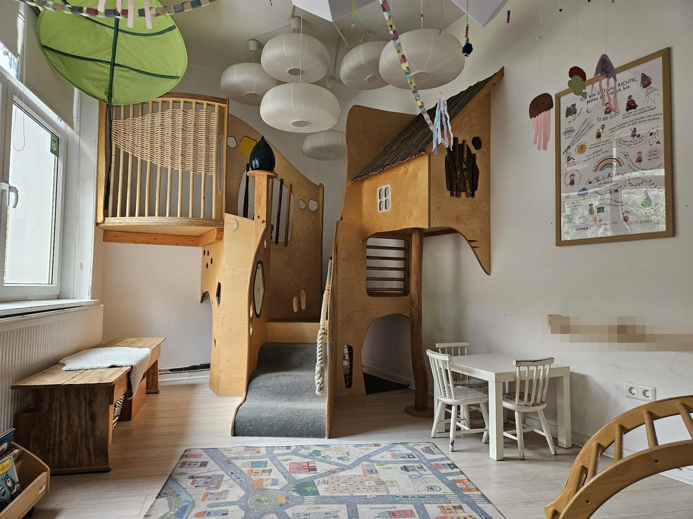
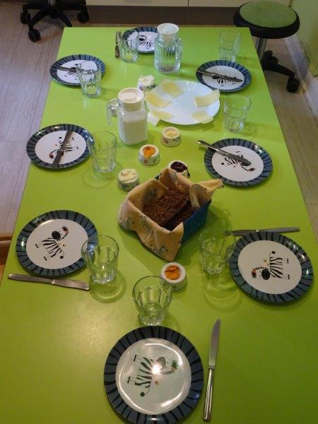
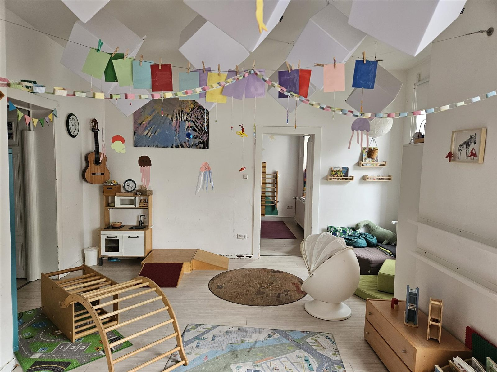
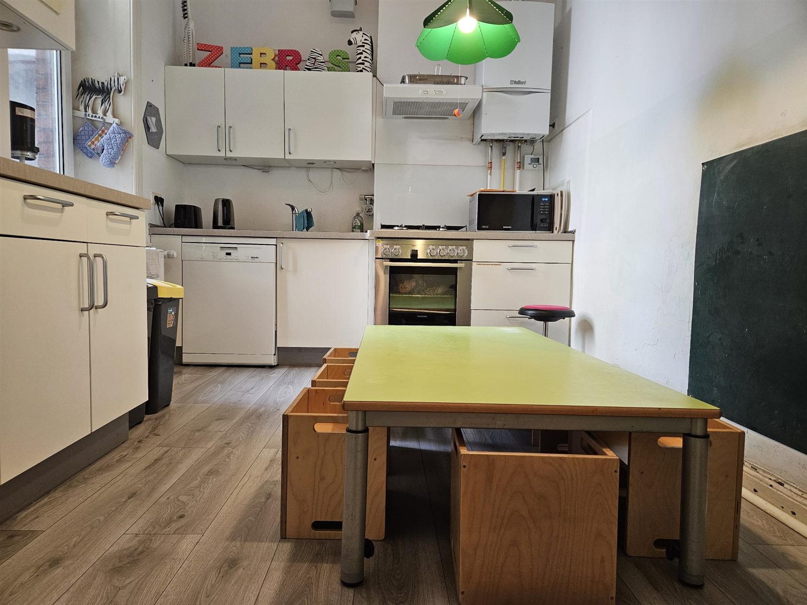

Kleine Krippe,
große Abenteuer.
Wir sind eine kleine Kindertagesstätte in Trägerschaft eines Elternvereins – mitten in der Calenberger Neustadt in Hannover. Hier wachsen zehn Kinder zwischen einem und drei Jahren in familiärer Atmosphäre auf.

Klein, gemütlich und mitten in der Stadt.
Die Krippe befindet sich seit nunmehr 30 Jahren in einer ca. 80 Quadratmeter großen, kindgerecht ausgestatteten Einrichtung in der Lenaustraße. Verschiedene Spielplätze in der Nähe erreichen wir zu Fuß oder mit dem Krippenwagen.
Qualifiziertes Fachpersonal und eine FSJ-Kraft kümmern sich um die Kinder. Frühstück und Mittagessen nehmen wir gemeinsam ein – das Mittagessen kommt in Bio-Qualität vom Caterer „Green Cuisine“.



Familiäre Gruppe
Zehn Kinder in einer festen, überschaubaren Gruppe – hier kennen sich alle.
Von Eltern getragen
Unser Träger ist ein Verein. Eltern gestalten mit – bei Festen, Aufräumtagen und in Vereinsämtern.
Viel draußen
Spielplätze, Markt, Turnhalle und Ausflüge – die Stadt ist unser erweitertes Spielzimmer.
Bio-Essen
Gemeinsames Frühstück und ein warmes Bio-Mittagessen von „Green Cuisine“.
Pädagogisches Konzept & Kinderschutz
Wie wir arbeiten, was uns wichtig ist und wie wir die Kinder schützen, haben wir ausführlich aufgeschrieben. Beide Dokumente stehen hier zum Download bereit.
Ein Tag bei den Zebras
Ein geregelter Tagesablauf gibt den Kindern Halt und Geborgenheit. So sieht ein ganz normaler Krippentag bei uns aus.
- Ankommen & FreispielDie Kinder werden gebracht und starten in den Tag.
- Hygiene & FrühstückGemeinsames Frühstück am großen Tisch.
- Ausflüge, Angebote oder FreispielSpielplatz, Markt, Musik, Turnhalle …
- Vorbereitung zum Essen
- MittagessenWarmes Bio-Essen von „Green Cuisine“.
- Ruhephase mit Büchern
- Mittagsschlaf
- Aufwachen & Anziehen
- Obstzeit
- Abholzeit
Klein, aber fein.
Diese Menschen begleiten unsere Zebras durch den Tag.
Janina Liebich
Kindheitspädagogin · Pädagogische Leitung
Fera Tumanggor
Heilerziehungspflegerin
Maximilian Schubert
Heilerziehungspfleger
Jona Kramp
Freiwilliges Soziales Jahr
Schiwa Merdju
Minijob
Elaha Farhadi
Hilfskraft
Susanne Schmidt
Reinigungskraft
Fallen pädagogische Fachkräfte durch Krankheit oder Urlaub aus, können wir Vertretungskräfte aus einem Springerpool anfragen. Dieser wird über die Kinderladeninitiative koordiniert, den Dachverband der Hannoverschen Elterninitiativen.
Mitarbeit erwünscht!
Die „Zappeligen Zebras“ sind eine Elterninitiative und auf die Mitarbeit der Eltern angewiesen. Träger ist ein Verein, dem Eltern für die Dauer der Betreuung beitreten.
1Gemeinsam
Wir erwarten die Teilnahme an:
- regelmäßigen Elternabenden
- Feiern und gemeinsamen Aktionen
- „Aufräumtagen“
- Mitgliederversammlungen
2Vereinsämter
Jedes Jahr neu verteilt:
- 1. und 2. Vorstand
- Kassenwart
- Einkaufsamt
- Platzvergabe / Anmeldungen
- Hygiene / Sicherheit
- Springer & Geschenke
- Protokolle / Listen / Homepage
3Elterndienste
Kleine Aufgaben im Wochenrhythmus:
- Montag
- Brötchen fürs Frühstück
- Mi & Fr
- Wäsche waschen
- Täglich
- Rohkost mitbringen
So sieht’s bei uns aus
Auf die Warteliste
Über unser Anmeldeformular kommt ihr auf unsere Warteliste. Der Auswahlprozess für das jeweilige Krippenjahr (August bis Juli) beginnt im Herbst/Winter des Vorjahres.
Der Betreuungsstart ist nach Absprache flexibel möglich.
- Formular ausfüllen und absenden
- Wir melden uns bei euch
- Kennenlernen in der Krippe
Bitte habt Verständnis dafür, dass wir mit dieser Anmeldung keine garantierte Zusage für einen Betreuungsplatz geben können.
Schaut vorbei!
Ihr habt Fragen zur Krippe, zur Anmeldung oder zum Verein? Wir freuen uns auf eure Nachricht.
30169 HannoverCalenberger Neustadt · Karte öffnen Telefon0511 14006Am besten zu den Betreuungszeiten E-Mailinfo@zappelige-zebras.de
8:00–15:30 Uhr